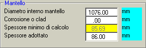
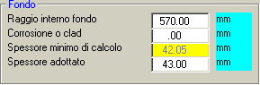
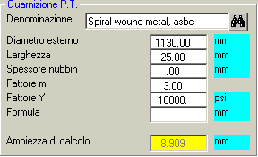

Questo pannello consente di determinare le caratteristiche della guarnizione posta sotto la piastra tubiera, le quali concorrono a determinare il carico di progetto delle viti interne.

E’ opportuno selezionare il tipo di guarnizione a partire dalla libreria delle guarnizioni, alla quale si accede tramite il pulsante con il binocolo. Così facendo, si otterrà automaticamente il valore dei parametri m ed Y, nonché si potrà selezionare la formula applicabile per il calcolo della larghezza efficiace (Ampiezza di calcolo) della guarnizione.
Il valore del diametro esterno della guarnizione viene giudicato dal programma poco plausibile quando è inferiore al diametro del mantello, o è superiore di più di 60 mm ad esso. In tali circostanze il programma chiede al progettista se desidera ripristinare il valore standard, che è pari al diametro interno del mantello più 26 mm, o più 32 mm, a seconda che detto diametro sia inferiore o superiore ad un metro.
Corrispondentemente, la larghezza della guarnizione viene posta, di standard, pari a 13 ovvero 16 mm.